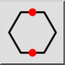
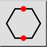
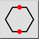
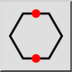

Polygon (Side, Side)
Toolbar / Icon:
 

Menu: Draw > Shape > Polygon (Side, Side)
Shortcut: P, G, 4
Commands: polygonss | pg4
Toolbar / Icon:
 

Menu: Draw > Shape > Polygon (Side, Side)
Shortcut: P, G, 4
Commands: polygonss | pg4
Creates polygons from two opposite corners or sides.